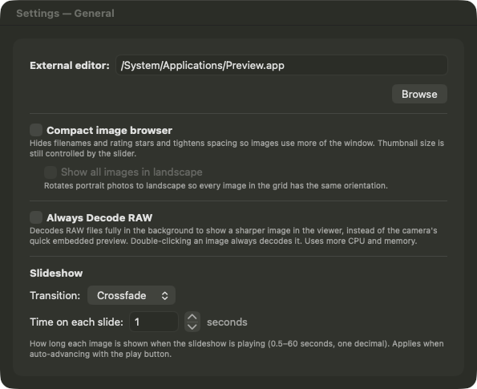
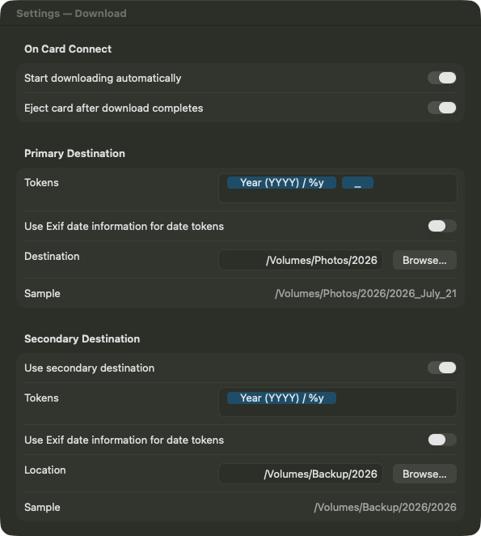
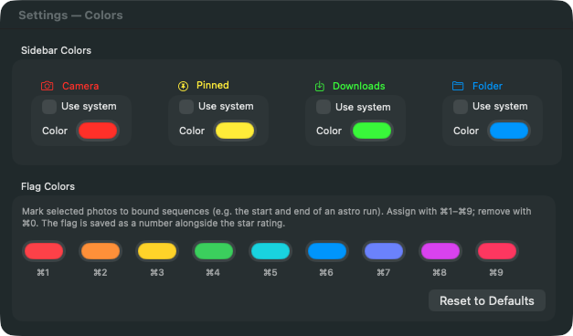

FirstPass User Manual
Objective
Downloading thousands of photographs from multiple memory cards can be a considerable challenge, particularly as each card must be downloaded individually, even when using several card readers. Furthermore, the initial editing process — rating, deleting, and detailed viewing — demands substantial time and effort. This software is specifically designed to assist photographers in reducing this workload by significantly expediting both the downloading process and the first pass edit, all within a single application.
This version of FirstPass has been re-imagined using SwiftUI and Swift.
Requirements: The current release is version 1.7.1, available on the Mac App Store and requiring macOS 14.6 or later. This release adds the Compare Similar Images workflow described below.
Unique features of FirstPass
The first MacApp store application on Mac to enable image download from multiple sources to multiple destinations.
Works with shared devices to enable download over a network.
Provides a fast and clean interface to do a “first pass” editing of images.
Frees up the user’s time by handling multiple downloads at the same time without requiring the user to swap the cards in and out of a card reader or starting the download manually for each card.
Can be configured to automatically start downloading when a device (or multiple devices) are plugged in.
Quick start guide
FirstPass has a single window type. User can create multiple windows and can browse different folders or download different cards. Same window can also be used to download multiple cards, each download triggered sequentially.

Settings Window
In addition, user can use Settings window to configure download and color settings. It is highly recommended to configure download settings before downloading anything.
Parts of Main Window
Sidebar

User can hide the sidebar using Hide Sidebar menu option or the Sidebar toggle button in the tool bar.
Image Gallery

Context Menu
Right clicking on an image provides a context menu. Using this context menu users can change rating, set a colour flag, compare a selection of similar images, show/hide the image information inspector, view the image in Finder, delete the image, rename the image and open with an external editor. External editor can be set in settings.

Sorting
Images in the gallery can be sorted in ascending or descending order using creation date, name or rating as the key. This can be done via Browser menu option.
Image Information
Image information is shown in an inspector. Can be enabled using the context menu on the image or by selecting an image and clicking on the toolbar item.
Ratings Filter
Rating filter is on the bottom left of the gallery. There are six buttons — unrated and rating from 1 to 5. Clicking on any button filters out that rating.
Colour Flags
In addition to 0–5 star ratings, each image can be marked with one of nine colour flags. Set a flag from the right-click context menu, or press ⌘1 through ⌘9; ⌘0 clears it. The nine flag colours can be customised in the Colours tab of Settings, and the flag is shown on the image in the gallery.

Selecting Multiple Images
Several images can be selected at once for rating, flagging, renaming or comparison. Use ⌘-click to add or remove individual images, Shift-click to select a range, and Shift with the arrow keys to extend the selection from the keyboard.
Compare Similar Images
New in version 1.7.1.
When several frames are near-identical — for example a burst, or several attempts at the same shot — it helps to view them together to keep only the best. Select between two and six images and choose Compare Images (⌘U) from the View menu, or from the right-click context menu. The selected images are tiled side-by-side and zoom and pan in unison, so you are always looking at the same part of every frame at the same time — ideal for judging critical focus and sharpness.

While comparing, you can rate an image, set a colour flag, or remove a frame from the comparison, all without leaving the view. Press Escape or Done to return to the gallery.
Browsing Sub-folders
By default a folder shows only the images it directly contains. Turn on Include Sub-folders in the Browser menu to browse a folder together with all of the images inside its sub-folders in a single gallery.
Slideshow
A full-screen slideshow of the current selection is available from the View menu, for reviewing images on a larger canvas.
Compact Image Browser
Compact image browser, enabled in the General tab of Settings, hides the filenames and rating stars and tightens the spacing so the photos themselves use more of the window — useful for a fast visual pass. The thumbnail size is still controlled by the gallery slider.

Turn on Show all images in landscape as well and portrait photos are rotated to landscape, so every cell in the grid shares the same orientation for a tidy, uniform layout.

Camera Window

When a camera is selected in the sidebar its images are shown in the main browser window. On the bottom left there are two buttons to download selected or download all images.
Settings
Settings window uses three tabs to organize settings. They are General, Download and Colors.
GENERAL

The General pane sets the external editor and the viewing options: the compact image browser (and the Show all images in landscape option beneath it), Always Decode RAW for a sharper viewer image, and the slideshow transition and timing.
Download

Download pane is used to set download destinations and image renaming tokens. Here user can set multiple download destinations. User can set primary and secondary destinations. User can also set the tokens for creating folders for primary and secondary downloads. Tokens can also be set for file renaming. Along with provided tokens user can add their own e.g. space, “_” etc.
Colours

All elements in the sidebar have coloured icons associated with them. There is a default set of colours, shown above, which users can change here. The same pane also sets the nine colour flags (⌘1–⌘9) used to mark images in the gallery; press Reset to Defaults to restore the standard palette.
File Renaming
Along with renaming files while they are being downloaded from a camera or a card, they can also be renamed while viewing them in gallery. This does not move the files to a different folder, just renames them in place. User can use all the same tokens as used for files while downloading from a camera or a card.
In the image gallery user can select a few images and right click to bring up the renaming panel. User can provide tokens, specify which date to use if the date tokens are used and provide a starting sequence number if renamed files result in name conflicts.

Note: After entering each word user must press enter to tokenize it. All known tokens should be dragged from collection to the renaming field.